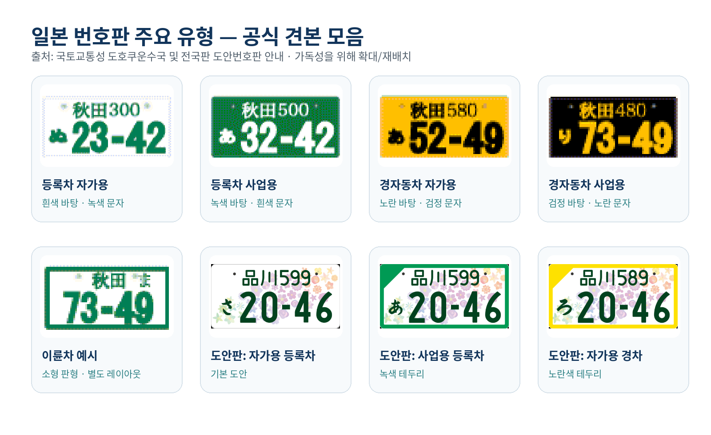
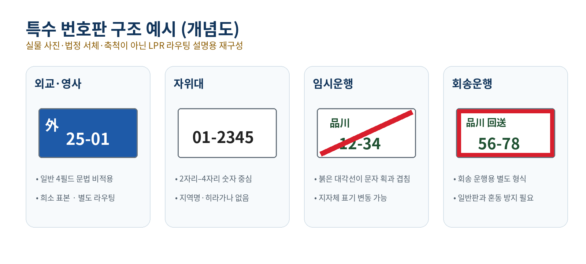

일본 주차장용 LPR 개발을 위한 차량 번호판 유형 조사
한눈에 보는 결론 일본 주차장 LPR의 1차 개발 대상은 등록차 자가용, 등록차 사업용, 경자동차 자가용, 경자동차 사업용의 네 가지 색상·운영 조합이다. 이 네 범주는 2026년 4월 말 전체 자동차 보유대수의 약 95.0%를 차지한다. 다만 번호판 도안, 희망번호, 알파벳 용도문자, 봉인·볼트, 지역명 한자, 야간 IR 반사 때문에 단일 OCR 모델만으로 처리하기 어렵다. 제품 구조는
번호판 검출 → 유형 분류 → 기하 정규화 → 필드별 OCR → 유형별 문법 검증 → 다프레임 융합으로 분리하는 것이 적합하다.
1. 일본 번호판의 기본 체계
일본의 일반 자동차 번호판은 실무적으로 다음 네 필드로 모델링할 수 있다. 경자동차 번호판도 같은 네 요소를 사용하며, 분류번호는 1~3자리로 표시된다.12
| 필드 | 일반 위치 | 의미 | LPR 구현 포인트 |
|---|---|---|---|
| 지역명 | 상단 좌측 | 차량 사용 본거지를 관할하는 운수지국·검사등록사무소 계열 명칭 | 작은 한자 OCR보다 지역명 단어 인식 + 허용 지역 사전이 효과적 |
| 분류번호 | 상단 우측 | 차종·용도 계열을 나타내는 1~3자리 숫자 | 첫 자리와 길이를 별도로 검증; 일부 현대 번호에는 알파벳이 포함될 수 있으므로 숫자 전용으로 고정하지 않음 |
| 용도문자 | 하단 좌측 | 자가용·사업용·대여용·주일미군 관계 차량 등을 구분하는 히라가나 또는 로마자 | 작은 글자이며 클래스 불균형이 큼; 필드 전용 OCR 권장 |
| 일련번호 | 하단 우측 | 1~4자리 차량 식별 번호 | 12-34, ・123, ・・12처럼 보이는 선행 공백·구분기호를 원본과 정규화값으로 이중 보존 |
1.1 지역명 필드의 전체 문자열 사전
국토교통성의 최신 「번호판 관할(지역명) 일람」을 도도부현별로 전수 대조하면, 2026년 7월 31일 현재 도도부현별 표기 139건, 중복을 제거한 OCR 문자열 138종이다. 富士山이 야마나시현과 시즈오카현에서 각각 교부되므로 관할 단위로는 2건이지만 문자열 사전에서는 1종으로 센다.17
이 사전은 등록자동차, 검사대상 경자동차, 소형이륜차, 경이륜차의 상단 지역명 후보로 사용한다. 지방판·전국판 도안번호판도 별도의 지역명 문법을 만들지 않고 해당 차량의 기본 지역명 체계를 공유한다. 다만 실제 교부 가능 여부는 차량 사용 본거지의 관할구역과 일치해야 하므로, 운영 지역이 정해진 시스템은 전국 138종 사전과 관할별 부분 사전을 병행하는 것이 좋다.17
| 도도부현 | 건수 | 실제 표기 문자열 |
|---|---|---|
| 北海道 | 10 | 札幌, 函館, 旭川, 室蘭, 苫小牧, 釧路, 知床, 帯広, 十勝, 北見 |
| 青森県 | 3 | 青森, 弘前, 八戸 |
| 岩手県 | 3 | 岩手, 盛岡, 平泉 |
| 宮城県 | 2 | 宮城, 仙台 |
| 秋田県 | 1 | 秋田 |
| 山形県 | 2 | 山形, 庄内 |
| 福島県 | 5 | 福島, 会津, 郡山, 白河, いわき |
| 茨城県 | 3 | 水戸, 土浦, つくば |
| 栃木県 | 4 | 宇都宮, 日光, 那須, とちぎ |
| 群馬県 | 3 | 群馬, 高崎, 前橋 |
| 埼玉県 | 7 | 大宮, 川口, 熊谷, 春日部, 越谷, 所沢, 川越 |
| 千葉県 | 10 | 千葉, 成田, 野田, 柏, 松戸, 習志野, 船橋, 市川, 袖ヶ浦, 市原 |
| 東京都 | 11 | 品川, 世田谷, 足立, 江東, 葛飾, 江戸川, 練馬, 杉並, 板橋, 多摩, 八王子 |
| 神奈川県 | 4 | 横浜, 川崎, 相模, 湘南 |
| 新潟県 | 3 | 新潟, 長岡, 上越 |
| 富山県 | 1 | 富山 |
| 石川県 | 2 | 石川, 金沢 |
| 福井県 | 1 | 福井 |
| 山梨県 | 2 | 山梨, 富士山 |
| 長野県 | 5 | 長野, 松本, 諏訪, 南信州, 安曇野 |
| 岐阜県 | 2 | 岐阜, 飛騨 |
| 静岡県 | 5 | 静岡, 沼津, 伊豆, 富士山, 浜松 |
| 愛知県 | 8 | 名古屋, 三河, 岡崎, 豊田, 尾張小牧, 一宮, 春日井, 豊橋 |
| 三重県 | 4 | 三重, 鈴鹿, 四日市, 伊勢志摩 |
| 滋賀県 | 1 | 滋賀 |
| 京都府 | 1 | 京都 |
| 大阪府 | 4 | 大阪, なにわ, 和泉, 堺 |
| 兵庫県 | 2 | 神戸, 姫路 |
| 奈良県 | 2 | 奈良, 飛鳥 |
| 和歌山県 | 1 | 和歌山 |
| 鳥取県 | 1 | 鳥取 |
| 島根県 | 2 | 島根, 出雲 |
| 岡山県 | 2 | 岡山, 倉敷 |
| 広島県 | 2 | 広島, 福山 |
| 山口県 | 2 | 山口, 下関 |
| 徳島県 | 1 | 徳島 |
| 香川県 | 2 | 香川, 高松 |
| 愛媛県 | 1 | 愛媛 |
| 高知県 | 1 | 高知 |
| 福岡県 | 4 | 福岡, 北九州, 筑豊, 久留米 |
| 佐賀県 | 1 | 佐賀 |
| 長崎県 | 2 | 長崎, 佐世保 |
| 熊本県 | 1 | 熊本 |
| 大分県 | 1 | 大分 |
| 宮崎県 | 1 | 宮崎 |
| 鹿児島県 | 2 | 鹿児島, 奄美 |
| 沖縄県 | 1 | 沖縄 |
사전 구축 시 주의사항
- 위 표는 현재 교부 가능한 문자열의 전수 목록이다.
彦根은 이 목록에 없으며, 시가현의 현행 자동차 번호판 지역명은滋賀이다.17 - 한자만 허용하면 안 된다.
いわき,とちぎ,つくば,なにわ처럼 히라가나가 포함된 지역명이 있다. 袖ヶ浦의 작은ヶ,尾張小牧·伊勢志摩처럼 4문자인 명칭,南信州같은 복합 명칭,富士山의 복수 관할을 정규화 과정에서 보존해야 한다.- 과거 발급판의 1문자 약칭 등은 현행 공식 일람에 포함되지 않는다. 공식 전수표가 확인되지 않은 레거시 명칭을 현행 138종 사전에 섞지 말고, 실제 수집 데이터로 검증된 항목만
region_legacy보조 사전에 추가한다. - 125cc 이하 원동기부자전거는 시·구·정·촌 관할이다. 지역명·지자체명·도안이 전국 단일 체계가 아니므로, 위 138종을 적용하지 말고 운영 대상 지자체별 사전을 별도로 구축한다.4
- 외교·영사, 자위대, 임시운행, 회송운행 번호표는 이 지역명 4필드 문법에 강제로 맞추지 않고 전용 파서로 분기한다.
1.2 번호판 종류별 용도문자 전체 목록
아래 표의 문자열은 공백 없이 이어 쓴 OCR 허용 문자 집합이다. 발급 시에는 그중 하나가 사용되며, 소형이륜차의 C·L·V 계열만 2문자 조합 규칙이 추가된다. 등록자동차는 자동차등록규칙, 경자동차는 도로운송차량법 시행규칙과 경자동차검사협회 안내, 이륜차는 국토교통성의 이륜차 번호판 현황 자료를 기준으로 정리했다.181194
| 번호판 종류 | 용도 구분 | 허용 문자·문자열 | 수·적용 규칙 |
|---|---|---|---|
| 등록자동차 | 자가용 | さすせそたちつてとなにぬねのはひふほまみむめもやゆらりるろ | 히라가나 29자 |
| 등록자동차 | 사업용 | あいうえかきくけこを | 히라가나 10자 |
| 등록자동차 | 대여용 | れわ | れ, わ 2자 |
| 등록자동차 | 주일미군 관계 자가용 | EHKMTYよ | 로마자 6자 + よ |
| 경자동차 | 자가용 | あいうえかきくけこさすせそたちつてとなにぬねのはひふほまみむめもやゆよらるろを | 히라가나 39자 |
| 경자동차 | 사업용 | りれ | り, れ 2자 |
| 경자동차 | 대여용 | わ | 1자 |
| 경자동차 | 주일미군 관계 자가용 | AB | 로마자 2자 |
| 소형이륜차(250cc 초과) | 자가용—기본 | あいうえかきくけこさすせそたちつてとなにぬねのはひふほまみむめもやらるを | 히라가나 36자 |
| 소형이륜차(250cc 초과) | 자가용—확장 조합 | C, L, V + 위 기본 36자 중 1자 | 로마자 접두 3종 × 히라가나 36종의 2문자 조합. 법정 순서에 따라 소진 |
| 소형이륜차(250cc 초과) | 사업용 | ゆりれ | ゆ, り, れ 3자 |
| 소형이륜차(250cc 초과) | 대여용 | ろわ | ろ, わ 2자 |
| 소형이륜차(250cc 초과) | 주일미군 관계 자가용 | ABEHKMTYよ | 로마자 8자 + よ |
| 경이륜차(125cc 초과 250cc 이하) | 자가용 | あいうえかきくけこさすせそたちつてとなにぬねのはひふほまみむめもやゆよらるろを | 히라가나 39자 |
| 경이륜차(125cc 초과 250cc 이하) | 사업용 | りれ | り, れ 2자 |
| 경이륜차(125cc 초과 250cc 이하) | 대여용 | わ | 1자 |
| 경이륜차(125cc 초과 250cc 이하) | 주일미군 관계 자가용 | AB | 로마자 2자 |
특수·예외 번호표의 적용 여부
| 유형 | 일반 용도문자 필드 | LPR 처리 원칙 |
|---|---|---|
| 외교·영사 | 해당 없음 | 外, 領 등 별도 접두·숫자 문법으로 분기 |
| 자위대 | 해당 없음 | 숫자 중심의 자위대 전용 번호 문법으로 분기 |
| 임시운행 | 일반 집합 해당 없음 | 일반차의 용도문자 대신 별도 지명·허가번호 필드를 사용하므로, 붉은 대각선과 임시운행 전용 문법으로 분기 |
| 회송운행 | 일반 집합 해당 없음 | 일반차의 용도문자 대신 별도 지명·허가번호 필드를 사용하므로, 붉은 테두리와 회송운행 전용 문법으로 분기 |
| 125cc 이하 원동기부자전거 | 전국 공통 집합 없음 | 지자체별 문자·도안 사전을 사용 |
1.3 LPR 문자집합과 제약 디코딩 규칙
- 유형을 먼저 분류한다. 판 색상·크기·레이아웃과 특수 표식을 이용해
REG,KEI,MOTORCYCLE_SMALL,MOTORCYCLE_LIGHT,MOPED_MUNICIPAL,SPECIAL로 분기한 뒤 해당 행의 문자만 허용한다. - 전체 합집합만으로 교정하지 않는다. 일반 용도문자 필드의 히라가나 합집합은
あいうえかきくけこさすせそたちつてとなにぬねのはひふほまみむめもやゆよらりるれろわを42자이며, 로마자 합집합은A,B,C,E,H,K,L,M,T,V,Y11자다. 그러나 차량 유형·용도별 허용 집합은 서로 다르므로 유형 조건 없이 합집합으로 강제 보정하면 의미가 바뀐다. - 소형이륜 2문자 토큰을 별도 처리한다. 자가용 기본 히라가나 36자를 먼저 사용하고, 이후
C,L,V와 기본 히라가나를 법정 순서대로 조합한다.4 필드 검출 폭과 시퀀스 길이를 1문자로 고정하면 이 계열을 누락한다. - 전각·반각 로마자를 정규화한다. 원본 glyph와 정규화 ASCII를 함께 보존하고,
O,I등 허용 집합 밖 로마자를 문법 점수만으로 임의 치환하지 않는다. - 미사용 히라가나를 음성적으로 추정하지 않는다. 위 전체 허용 집합에는
お,し,へ,ん이 없으며, 현대 가나ゐ,ゑ도 사용하지 않는다. OCR 원시 출력에는 남기되, 해당 판형의 문법 후보에서는 제외한다. - 지역명은 문자열 단위로 점수화한다. 한 글자씩 독립 보정하기보다 138종 trie 또는 WFST를 사용하고, 관할 정보가 있으면 후보를 추가로 축소한다.
富士山은 문자열만으로 야마나시·시즈오카 관할을 구분할 수 없으므로 원본 영상의 운영 지역 또는 등록 데이터와 결합한다. - 레거시·미확인 입력은 보존한다. 현행 사전에 없는 지역명이 관측되면 가장 가까운 현행 명칭으로 강제 치환하지 말고
UNKNOWN_REGION또는LEGACY_REGION으로 라우팅한다.
분류번호 첫 숫자의 대표적인 의미는 1=보통화물, 2=승합, 3=보통승용, 4·6=소형화물, 5·7=소형승용, 8=특수용도, 9=대형특수, 0=건설기계 계열 대형특수이다.2 이 정보는 OCR 후보를 교정하는 강한 문법 신호이지만, 번호판만으로 차량의 세부 제원을 확정하는 용도로 쓰면 안 된다.
2. 번호판 크기와 적용 차종
국토교통성 자료가 제시하는 법정 판형은 다음 세 가지다.3
| 구분 | 가로 × 세로 | 종횡비 | 주 적용 대상 | 주차장 LPR 의미 |
|---|---|---|---|---|
| 대형판 | 440 × 220 mm | 2.00:1 | 차량총중량 8t 이상 또는 최대적재량 5t 이상 보통화물차, 정원 30명 이상 보통승합차 | 승용차 중심 ROI 앵커보다 실제 픽셀 면적은 크지만, 장착 높이·거리 분산이 큼 |
| 중형판 | 330 × 165 mm | 2.00:1 | 대형판 대상과 125cc 초과 이륜차를 제외한 대부분의 등록차·사륜 경차 | 주차장 LPR의 주력 판형 |
| 소형판 | 230 × 125 mm | 1.84:1 | 125cc 초과 이륜차 | 사륜 중형판과 다른 종횡비·필드 배치·작은 ROI가 필요 |
125cc 이하 원동기부자전거 번호판은 시·구·정·촌이 관할한다. 색상과 형상은 배기량 구분 및 지자체 디자인에 따라 달라질 수 있으므로 전국 단일 크기·문법을 가정해서는 안 된다.4
3. 주요 번호판 샘플 이미지

색상만으로 구분할 때의 핵심 규칙
- 등록차 자가용: 흰 바탕 + 녹색 문자
- 등록차 사업용: 녹색 바탕 + 흰 문자
- 경자동차 자가용: 노란 바탕 + 검정 문자
- 경자동차 사업용: 검정 바탕 + 노란 문자12
- 도안번호판: 판 전체 평균색보다 외곽 테두리가 중요하다. 사업용 등록차에는 녹색 테두리, 자가용 경자동차에는 노란색 테두리가 적용된다.5
4. 유형별 특징·규격·사용률·인식 난이도
난이도 기준
- 1 — 낮음: 정면·주간·청결 조건에서 표준 OCR로 안정적
- 2 — 보통: 필드 분할과 한자 사전이 필요
- 3 — 높음: 색상·도안·희소성 또는 야간 도메인 차이를 별도로 학습해야 함
- 4 — 매우 높음: 작은 판형이나 별도 레이아웃 파서가 필요
- 5 — 극고: 일반 4필드 문법이 적용되지 않고 실데이터가 희소함
난이도는 법정 등급이 아니라 주차장 LPR 개발 관점의 엔지니어링 평가이다.
4.1 핵심 운영 범주
2026년 4월 말 공식 월보의 상세표는 용도별 자가용/영업용 수량까지 제공한다.6 아래 사용률은 동일 월보의 전체 자동차 82,931,302대를 분모로 직접 계산했다.
| 유형 | 색상·용도 | 규격 | 보유대수 | 전체 대비 | LPR 난이도 | 주요 난점 |
|---|---|---|---|---|---|---|
| 등록차 자가용 | 흰색 바탕·녹색 문자 | 중형 330×165 mm 또는 대형 440×220 mm | 44,762,180대 | 53.98% | 2 | 가장 흔하지만 지역명 한자, 봉인·볼트, 프레임 가림, 2단 배열 존재 |
| 등록차 사업용 | 녹색 바탕·흰색 문자 | 중형 또는 대형 | 1,820,769대 | 2.20% | 3 | 반전 색상, 야간 IR에서 배경·문자 반사 특성 차이, 일반판 대비 표본 부족 |
| 검사대상 경자동차 자가용 | 노란색 바탕·검정 문자 | 중형 330×165 mm | 31,827,887대 | 38.38% | 2 | 구조는 표준 4필드이나 노란색 도메인과 흰색 도안판을 모두 처리해야 함 |
| 검사대상 경자동차 사업용 | 검정 바탕·노란 문자 | 중형 330×165 mm | 374,432대 | 0.45% | 3 | 어두운 배경, 적은 표본, 노출 부족에서 판 경계와 문자 동시 손실 가능 |
| 소형이륜차(250cc 초과) | 자가용 흰 바탕·녹색 문자, 사업용 녹색 바탕·흰 문자 | 소형 230×125 mm | 1,988,452대 | 2.40% | 4 | 분류번호가 없는 별도 레이아웃, 작은 ROI, 후면 단일판, 차체 기울기 |
| 경이륜차 등 | 자가용 흰 바탕·녹색 문자, 사업용 녹색 바탕·흰 문자 | 소형 230×125 mm | 2,157,582대 | 2.60% | 4 | 소형이륜과 유사하나 번호 양식·표장 배치가 다름; 다중 스케일 검출 필요 |
계산 범위 주의: 등록차 자가용·사업용은 등록자동차 총계 46,582,949대를, 검사대상 경자동차 자가용·사업용은 사륜·삼륜 경차 32,202,319대를 각각 완전히 분할한다. 경자동차 공식 총계 34,359,901대에는 경이륜차 등 2,157,582대가 추가로 포함된다. 여섯 범주의 합계는 공식 자동차 총계 82,931,302대와 일치한다.6
4.2 125cc 이하 원동기부자전거
2024년 3월 말 기준 일본 이륜차 보유대수는 약 1,027만6천 대이며, 그중 원동기부자전거 제1종은 417만7천 대, 제2종은 206만4천 대였다.7 이 수치는 2026년 4월 자동차 월보와 기준일·관할·통계 범위가 다르므로 위 표에 합산하지 않는다.
- 규격: 전국 단일 규격으로 고정하지 않음
- 난이도: 5
- 이유: 지자체별 판형, 색상, 지역 표기, 도안 변동성이 큼
- 권장 범위: 실제 운영 지역의 지자체판부터 단계적으로 사전과 학습 데이터를 확장
4.3 도안번호판
지방판 도안번호판은 2018년 10월 도입 이후 확장되어 2026년 7월 현재 78개 지역에서 도입되어 있다. 제4탄 5개 지역은 2025년 5월 7일 교부를 시작했으며, 제5탄은 2027년 11월경, 제6탄은 2029년 5월경 교부가 예정되어 있다.8
국토교통성의 2026년 6월 말 지역별 신청건수를 합산하면 누적 1,058,786건이다.9 이는 신청 누계이며 현재 운행 중인 차량 수나 전국 보급률과 동일하지 않다. 도안판은 기본 차량 유형 위에 중첩되는 외관 변형이므로 일반 번호판 수량에 더하면 중복 집계가 된다.
- 대상: 자가용 등록차, 사업용 등록차, 자가용 경자동차
- 대상 제외: 사업용 경자동차와 이륜차
- 규격: 기본 차종의 대형·중형 규격 유지
- 난이도: 3
- 오류 요인: 배경 무늬와 문자 획의 혼선, 모노톤·풀컬러 도메인 차이, 테두리 일부 가림
- 분류 핵심: 사업용 등록차의 녹색 테두리, 자가용 경자동차의 노란색 테두리5
4.4 희망번호
희망번호는 번호판 전체 형식을 바꾸는 유형이 아니라 소유자가 일련번호 부분을 선택할 수 있는 제도다. 등록자동차의 자가용·사업용과 사륜 경자동차 자가용이 대상이며, 일부 인기 번호는 추첨 대상이다.4
- 사용률: 최신 전국 보유차량 대비 점유율은 본 조사에서 확인하지 못함
- 인식 난이도: 기본판과 거의 같지만
1,7,8,88,1111,8888등 반복·짧은 숫자에서 문자 분할 및 선행 공백 정규화 오류를 별도 시험해야 함
5. 특수·예외 번호판

| 유형 | 특징 | 규격·사용률 | 난이도 | 권장 처리 |
|---|---|---|---|---|
| 외교·영사 번호판 | 청색 계열 바탕, 外 등 특수 표지와 숫자 중심의 별도 형식 | 최신 전국 수량과 법정 치수 공개 통계 미확인 | 5 | 일반 지역명·분류번호 파서로 강제하지 말고 DIPLOMATIC 전용 클래스와 수동확인 경로 운영 |
| 자위대 차량 번호 | 일반 지역명 없이 2자리 유형번호 + 4자리 개별번호 중심 | 방위성 훈령 적용; 전국 사용률 공개 통계 미확인10 | 5 | 숫자 전용 2–4 파서와 JSDF 라우팅을 분리 |
| 임시운행 허가번호표 | 미등록·검사만료 등 차량의 제한된 목적·기간·경로 운행에 사용, 붉은 대각선이 대표적 | 지자체가 허가·대여; 전국 보유 사용률 개념 부적합11 | 5 | 붉은 선을 구조 표식으로 검출하고 문자 획과 겹치는 영역에 강건한 OCR 적용 |
| 회송운행 허가번호표 | 제작·판매·정비업자의 반복적 차량 회송에 쓰는 별도 번호표 | 허가·대여 기반; 최신 전국 사용량 미확인 | 5 | 임시운행판과 별도 클래스로 두고, 일반판과 혼동 시 REVIEW 처리 |
외교 번호판 실사진의 한 예는 Wikimedia Commons에서 확인할 수 있으며, 해당 파일은 CC BY 2.0으로 제공된다.12 실제 번호가 보이는 사진은 학습·배포 전 개인정보·운영정책을 검토해야 한다.
6. 사용률 요약과 개발 우선순위
전체 자동차 82,931,302대 기준
- 등록차 자가용: 53.98%
- 경자동차 자가용: 38.38%
- 경이륜차 등: 2.60%
- 소형이륜차: 2.40%
- 등록차 사업용: 2.20%
- 경자동차 사업용: 0.45%6
따라서 사륜차 주차장을 먼저 목표로 한다면 다음 순서가 합리적이다.
- MVP: 등록차 자가용 + 경자동차 자가용
- 상용화 필수: 등록차 사업용 + 경자동차 사업용 + 도안번호판
- 확장: 이륜차 전용 검출·파서
- 안전 라우팅: 외교·자위대·임시·회송은 초기에 완전 인식보다
SPECIAL/UNKNOWN검출과 수동확인을 우선
7. 인식 난점 매트릭스
| 난점 | 실패 형태 | 데이터·모델 대책 | 카메라·현장 대책 |
|---|---|---|---|
| 작은 한자 지역명 | 상단 필드 누락·유사 한자 혼동 | 지역명 단어 OCR, 공식 사전 후보와 무제약 후보 병렬 출력 | 최원거리에서 지역명 한자 획이 남는지 픽셀 실측 |
| 히라가나·로마자 | 하단 좌측 작은 문자 오인식 | 필드 전용 헤드, 문자별 재현율과 클래스 빈도 관리 | 볼트·프레임이 하단 좌측을 가리지 않게 카메라 오프셋 조정 |
| 2단 배열 | 전체판 시퀀스 OCR의 읽기 순서 오류 | 필드 검출 후 네 영역 OCR, 전체판 OCR은 보조 신호로 사용 | 급한 수직·수평 원근이 생기지 않는 위치 선정 |
| 대형·중형·소형 판형 | 이륜차·원거리판 미검출 | 다중 스케일 검출과 판형별 입력 해상도 | 차로별 최소·중앙·최대 거리에서 ROI 폭·높이 측정 |
| 도안 배경 | 문자와 꽃·선 패턴 혼동 | 도안 증강, 배경 억제, 외곽 테두리 분류 | 과노출로 옅은 문자·테두리가 사라지지 않게 조정 |
| 봉인·볼트·프레임 | 판 경계·숫자 일부 가림 | 가림 마스크 증강, 필드별 confidence | 후면 좌측 봉인을 정상 분포로 포함하고 장착 프레임 극단 사례 수집 |
| 직사광·그림자·역광 | 판 내부 밝기 불균일 | 다중 노출 증강, 국부 대비, 공간적으로 다른 임계값 후보 | 촬영 방향·차광·노출·WDR을 현장 A/B 시험 |
| 야간 IR·반사 | 문자 획 포화, 색상 정보 소실 | RGB/IR 도메인 분리 평가, 포화 증강 | 투광 세기·조사각·셔터·게인을 공동 튜닝 |
| 비·눈·오염 | 획 누락·산란·판 경계 붕괴 | 오염 단계 라벨, 거부 모델, 다프레임 결합 | 렌즈 방수·발수·정기 세척과 복수 프레임 확보 |
| 희귀 특수판 | 일반 문법에 의한 강제 오보정 | UNKNOWN/SPECIAL 클래스, OOD 검출, 전용 파서 | 자동 출입 승인보다 수동확인 우선 |
실환경 연구에서는 강한 외광과 그림자가 번호판 인식을 저하시킬 수 있으며, 판 내부 밝기 불균일에 대응하는 전처리가 필요하다고 보고했다.13 또한 일본 번호판 합성 데이터와 문법 제약 디코딩을 결합하는 연구가 제안되었지만, 합성 데이터는 실제 주차장 홀드아웃 평가를 대체하지 않는다.14
8. 권장 LPR 시스템 구조
차량/번호판 검출
→ ROI 품질검사(픽셀 크기·초점·포화·가림)
→ 판형·색상·특수표식 분류
├─ REG_PRIVATE / REG_BUSINESS
├─ KEI_PRIVATE / KEI_BUSINESS
├─ GRAPHIC_OVERLAY
├─ MOTORCYCLE_SMALL
├─ MOPED_MUNICIPAL
├─ DIPLOMATIC
├─ JSDF
├─ TEMPORARY / TRANSFER
└─ UNKNOWN
→ 모서리·키포인트 기반 원근 정규화
→ 지역명 / 분류번호 / 용도문자 / 일련번호 필드 OCR
→ 유형별 문법 제약 디코딩
→ 연속 프레임의 필드별 증거 융합
→ ACCEPT / REVIEW / REJECT출력 데이터 예시
{
"plate_type": "KEI_PRIVATE",
"type_confidence": 0.98,
"fields": {
"region": {"raw": "品川", "normalized": "品川", "confidence": 0.97},
"class_code": {"raw": "580", "normalized": "580", "confidence": 0.99},
"use_char": {"raw": "あ", "normalized": "あ", "confidence": 0.93},
"serial": {"raw": "12-34", "normalized": "1234", "confidence": 0.99}
},
"grammar_score": 0.97,
"image_quality": {
"blur": 0.08,
"saturation": 0.03,
"occlusion": 0.02
},
"event_confidence": 0.98,
"decision": "ACCEPT"
}전체 confidence를 문자 확률의 단순 곱으로 만들면 긴 필드가 불리해질 수 있다. 유형·조명·차로별로 calibration하고, 유형 confidence가 낮거나 필수 필드가 누락되면 자동 승인 대신 REVIEW로 라우팅해야 한다.
9. 데이터셋 설계 권고
필수 라벨 축
- 차량 범주: 등록차, 경자동차, 이륜차, 지자체 원동기, 미확인
- 번호판 유형: 자가용/사업용, 도안 여부, 외교, 자위대, 임시, 회송
- 네 문자 필드와 각 필드의 판독 가능 여부
- 촬영 도메인: 주간 RGB, 야간 RGB, 야간 IR, 혼합광
- 기하: 거리, 수평각, 수직각, ROI 픽셀 폭·높이
- 품질: 초점, 모션블러, 포화, 오염, 파손, 프레임·봉인·볼트 가림
- 환경: 맑음, 비, 눈, 안개, 역광, 그림자, 젖은 판
- 운영 문맥: 입차/출차, 차로, 카메라 ID, 연속 프레임 이벤트 ID
분할 원칙
같은 차량의 연속 프레임이 학습·검증·시험 세트에 나뉘면 데이터 누출이 생긴다. 번호판 ID 또는 출입 이벤트 단위로 분할하고, 같은 주차장·카메라만으로 구성된 시험 외에 새로운 차로·지역을 포함한 외부 시험 세트를 별도로 둔다.
합성 데이터의 적절한 역할
합성 데이터는 희귀 지역명·도안·특수판·급각도·IR 포화의 초기 학습에 유용하다. 그러나 반사재, 카메라 ISP, 렌즈 플레어, JPEG 압축, 실제 오염을 완전히 재현하지 못하므로 제품 승인 지표는 실데이터 홀드아웃에서 산출해야 한다.
평가 지표
- 번호판 검출: 판형별 Recall/AP와 미검출률
- 유형 분류: 혼동행렬, 특히
등록차 사업용↔자가용,도안 경차↔등록차 - OCR: 전체판 완전일치율과 필드별 정확도
- 운영: 이벤트 단위 완전일치율, 오인식 승인률, 수동확인률, 처리지연
- 조건별: 주/야간, RGB/IR, 차로, 거리, 각도, 날씨, 번호판 유형별 성능
10. 카메라·조명 현장 시험 권고
특정 WDR 수치나 IR 파장을 보편적 필수사양으로 고정하지 말고 실제 차로에서 후보 장비를 비교한다.
- 차량이 감속하고 번호판 위치 분산이 작은 촬영 지점을 선정한다.
- 최소·중앙·최대 거리에서 판 전체와 지역명 한자의 실제 픽셀 크기를 측정한다.
- 카메라 높이·좌우 오프셋·수평/수직각을 스윕하고 원근 보정 후 OCR 성능을 비교한다.
- 셔터·조리개·게인·프레임레이트를 차량 속도와 모션블러 기준으로 공동 튜닝한다.
- 정오 직사광, 건물 그림자 경계, 역광, 젖은 판에서 WDR·노출 모드를 비교한다.
- 야간에는 IR 투광 세기와 조사각을 바꾸며 포화 픽셀률과 문자 획 보존률을 측정한다.
- 비·눈·렌즈 오염·헤드라이트 플레어·차단기 반사·다중 차량 간섭을 시험한다.
번호판 커버·스티커·고의적 오염·회전·접기 금지는 2016년 4월부터 명확화되었고, 2021년 4월 이후 최초 등록 차량에는 각도·프레임·볼트커버 기준이 적용된다.15 그러나 현실 데이터에 위법·파손 상태가 전혀 없다는 뜻은 아니므로, 운영 모델에는 가림·오염 거부 로직이 필요하다.
11. 단계별 개발 로드맵
1단계 — 표준 사륜판 MVP
- 등록차·경자동차의 표준 4필드 검출/OCR
- 네 색상 유형 분류
- 주간 RGB·야간 IR 별도 성능표
- 이벤트 단위 다프레임 융합
- 필드별 confidence와 수동확인 경로
2단계 — 도안·이륜 확장
- 전국·지역 도안판과 테두리 분류
- 이륜차 소형판 검출 및 별도 레이아웃 파서
- 주요 운영지역의 원동기부자전거 사전 구축
3단계 — 특수판 안전 라우팅
- 외교·자위대·임시·회송의
SPECIAL/UNKNOWN검출 - 데이터가 부족한 유형은 강제 OCR로 출입을 승인하지 않음
- 충분한 유형별 실데이터 확보 후 전용 파서와 confidence calibration 적용
12. 이미지 이용 조건
그림 1의 원본 국토교통성 콘텐츠는 별도 권리표시가 없는 경우 공공데이터 이용규약 제1.0판(PDL1.0)에 따라 출처 표시와 가공 사실을 명시해 사용할 수 있다.16 본 보고서의 그림 1에는 “국토교통성 웹사이트 원본을 확대·재배치하여 작성”했다는 가공 사실을 표시했다. 로고·캐릭터·제3자 권리표시가 있는 콘텐츠는 이 일반 조건의 적용 대상이 아닐 수 있으므로 파일 단위 확인이 필요하다.
13. 최종 개발 체크리스트
- [ ] 일반 등록차·경차의 네 색상 유형을 별도 클래스 또는 조건부 헤드로 처리하는가
- [ ] 대형 440×220, 중형 330×165, 소형 230×125 mm 판형을 데이터에 포함하는가
- [ ] 지역명 한자·분류번호·용도문자·일련번호를 필드별로 평가하는가
- [ ] 도안판을 기본 차량 유형과 중복 집계하지 않는가
- [ ] 야간 IR에서 색상 정보가 사라질 때의 대체 특징을 학습하는가
- [ ] 같은 차량 이벤트가 학습·시험 세트에 동시에 들어가지 않는가
- [ ] 특수판과 OOD 입력에
REVIEW/REJECT경로가 있는가 - [ ] 출입 승인 지표가 단순 문자 정확도가 아니라 이벤트 단위 오인식 승인률까지 포함하는가
- [ ] 번호판 이미지·학습데이터의 라이선스와 개인정보 처리 근거를 파일 단위로 기록하는가
14. 결론
일본 번호판은 하나의 OCR 문제라기보다 일반 4필드 번호판군과 문법이 다른 예외군을 먼저 분기하는 문제다. 전체 차량의 약 95%를 차지하는 네 가지 사륜차 색상 유형을 우선 완성하고, 도안판을 중첩 외관으로 학습한 뒤 이륜·지자체·외교·자위대·임시·회송판을 별도 라우팅하는 것이 개발 위험을 가장 낮춘다.
카메라와 모델 사양은 카탈로그 숫자보다 실제 주차장 조건에서의 이벤트 단위 완전일치율, 오인식 승인률, 거부율로 결정해야 한다. 특히 지역명 한자, 야간 IR 포화, 급각도, 도안 배경, 봉인·프레임 가림을 별도 성능 축으로 관리하는 것이 일본형 LPR의 핵심이다.
참고문헌
- 경자동차검사협회 — 경자동차 번호판의 구성과 색상 — https://www.keikenkyo.or.jp/information/knowledge/plate_number.html
- 국토교통성 도호쿠운수국 — 번호판 색상과 분류번호 — https://wwwtb.mlit.go.jp/tohoku/at/number.htm
- 국토교통성 — 번호판의 현황 및 대형·중형·소형 규격 — https://www.mlit.go.jp/common/000169006.pdf
- 국토교통성 — 이륜차 번호판 현황·양식·희망번호 제도 — https://www.mlit.go.jp/jidosha/content/001616580.pdf
- 국토교통성 — 전국판 도안번호판 유형과 공식 견본 — https://www.mlit.go.jp/jidosha/zugaranumber_zenkokur4/
- 국토교통성 — 2026년 4월 말 자동차 보유차량수 월보 — https://www.mlit.go.jp/common/001466403.pdf
- 일본자동차공업회 — 2024년 3월 말 이륜차 보유대수 — https://www.jama.or.jp/statistics/facts/two_wheeled/index.html
- 국토교통성 — 지방판 도안번호판 도입 지역과 일정 — https://www.mlit.go.jp/jidosha/jidosha_tk6_000036.html
- 국토교통성 — 지방판 도안번호판 신청건수(2026년 6월 말) — https://www.mlit.go.jp/jidosha/content/002013658.pdf
- 방위성 — 자위대가 사용하는 자동차 번호·표지에 관한 규정 — http://www.clearing.mod.go.jp/kunrei_data/f_fd/1970/fy19700831_00095_003.pdf
- 히가시쿠루메시 — 자동차 임시운행 허가 안내 — https://www.city.higashikurume.lg.jp/shinseisho/juminhyo/1024059.html
- Wikimedia Commons — Japan diplomatic license plate (外)2501.jpg, CC BY 2.0 — https://commons.wikimedia.org/wiki/File:Japan_diplomatic_license_plate_(%E5%A4%96)2501.jpg
- Toshiba Review — 실환경 번호판 인식과 밝기 불균일 대응 — https://www.global.toshiba/content/dam/toshiba/migration/corp/techReviewAssets/tech/review/2009/04/64_04pdf/a04.pdf
- JSAI 2026 — 일본 번호판 합성 데이터와 제약 디코딩 연구 — https://www.jstage.jst.go.jp/article/pjsai/JSAI2026/0/JSAI2026_3YinA13/_pdf/-char/ja
- 국토교통성 — 번호판 표시 의무 및 가림·각도·프레임 기준 — https://www.mlit.go.jp/report/press/jidosha09_hh_000124.html
- 국토교통성 — 링크·저작권·면책 및 공공데이터 이용조건 — https://www.mlit.go.jp/link.html
- 국토교통성 — 번호판 관할(지역명) 일람 — https://www.mlit.go.jp/jidosha/content/001622186.pdf
- e-Gov 법령검색 — 자동차등록규칙 — https://elaws.e-gov.go.jp/document?lawid=345M50000800007
- e-Gov 법령검색 — 도로운송차량법 시행규칙 — https://laws.e-gov.go.jp/law/326M50000800074